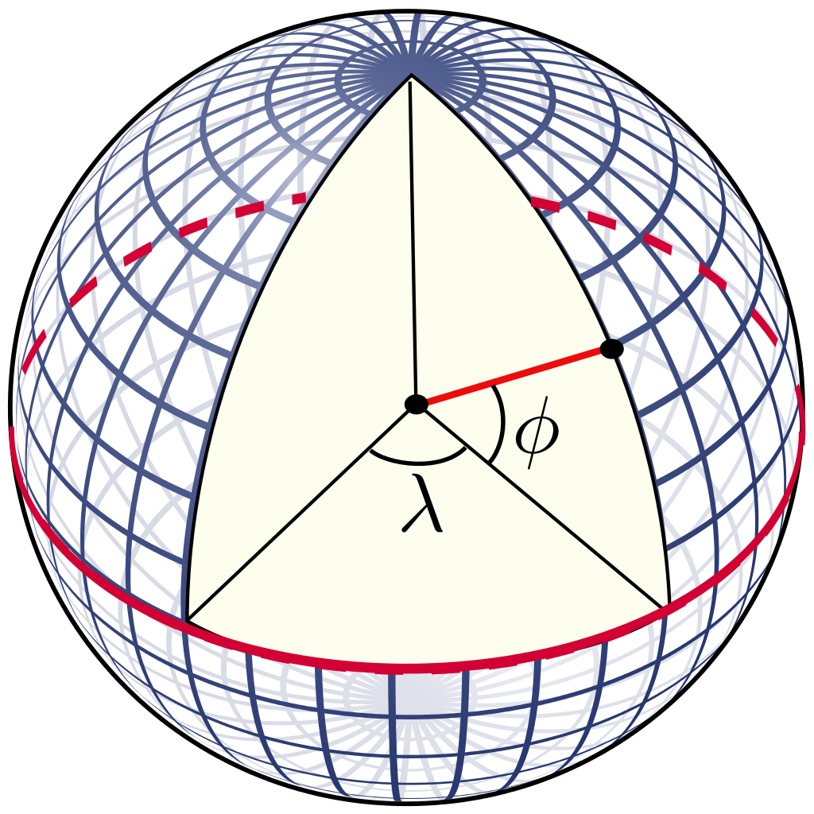

Prof. Dr.-Ing. Johannes Schildgen
johannes.schildgen@oth-regensburg.de
Modern Database Concepts
Chapter 6: Spatial Data


Spatial Data
Representation of real-world objects
.Geometric objects in Euclidean space
Geographic Information System (GIS)
A system for collecting, storing, analyzing and disseminating information about areas of the earth.
Coordinate Systems
Geographic
On surface of the earth: Latitude Φ and Longitude λ
Unit: degrees °
Projected
Projected to 2D space; many different projection algorithms
Abstract coordinate systems
Not related to Earth's surface (e.g., location on an image); 2D $(x,y)$ or 3D $(x,y,z)$
Spatial Reference Systems
Local, regional or global system to locate geographical entities.
| SRID | Spatial Reference System | Description |
|---|---|---|
| 4326 | WGS-84 | World-wide; used by GPS, ... (unit: degrees) |
| 31466 | DHDN / Gauß-Krüger Zone 2 | Germany (west of 7.5° E) |
| 31467 | DHDN / Gauß-Krüger Zone 3 | Germany (between 7.5° E and 10.5° E) |
| 31468 | DHDN / Gauß-Krüger Zone 4 | Germany (between 10.5° E and 13.5° E) |
| 31469 | DHDN / Gauß-Krüger Zone 5 | Germany (between 13.5° E and 16.5° E) |
| 3857 | WGS 84 / Pseudo-Mercator | Used by Google Maps, OpenStreetMap, ... (unit: metre) |
When using SRID 4326, what's the distance between London and Tokyo?
- 15
- 140
- 5938
- 9559
https://fraage.de
SQL/MM Spatial
GEOMETRY data type
Routines
Creation, manipulation, retrieval, comparison, conversion
ST_EQUALS(g1, g2)ST_INTERSECTS(g1, g2)ST_INTERSECTION(g1, g2)ST_BUFFER(g, dist)ST_AREA(surface)ST_X(point)ST_DISTANCE(g1, g2)- ...
0-dimensional geometries
ST_Point
POINT(5 5)ST_MultiPoint
MULTIPOINT(1 1, 1 3, 3 3)Format used here: WKT (well-known text)
Routines for points:
ST_X(p),ST_Y(p)for coordinate access
1-dimensional geometries
Represented by a sequence of points (closed if start point = end point)
ST_LineString
LINESTRING(1 1, 1 3, 3 3)LINESTRING(1 1, 1 3, 3 3, 1 1)Routines for curves:
ST_StartPoint(c),ST_EndPoint(c)→ ST_PointST_NPoints(c)→ Integer (number of points)ST_PointN(c, n)→ ST_Point (n-th point)ST_Length(c)→ FloatST_IsClosed(c)→ Boolean
2-dimensional geometries
Boundaries are one or more closed curves
ST_Polygon
1 external closed LineString + n holes
POLYGON((0 0, 1 1, 2 0, 1 -1, 0 0))POLYGON((0 0, 1 1, 2 0, 1 -1, 0 0),
(0.7 0, 1 0.3, 1.3 0, 1 -0.3, 0.7 0))Routines for surfaces:
ST_Area(s),ST_Perimeter(s)→ FloatST_Centroid(s)→ ST_Point
What's true for the two polygons on this slide?
- Same area, same centroid
- Same area, different centroid
- Different area, same centroid
- Different area, different centroid
https://fraage.de
Other Routines
Routines for all geometries:
ST_Envelope(g)→ ST_Polygon (bounding rectangle)ST_Buffer(g, dist)→ ST_Geometry
(encircles geometric at a specific distance)ST_Difference(g1, g2),ST_Intersection(g1, g2),ST_Union(g1, g2)→ ST_GeometryST_Intersects(g1, g2),ST_Crosses(g1, g2),ST_Overlaps(g1, g2),ST_Touches(g1, g2),ST_Contains(g1, g2),ST_Within(g1, g2)→ BooleanST_IsSimple(g)→ Boolean (no self-intersection)
PostGIS
Spatial and Geographic Objects for PostgreSQL.
CREATE TABLE buildings (
customer_name VARCHAR(50) PRIMARY KEY,
geo GEOMETRY(POINT, 4326));INSERT INTO buildings VALUES ('Rita',
ST_GEOMFROMTEXT('POINT(12.096944 49.017222)', 4326));
INSERT INTO buildings VALUES ('Mary',
ST_GEOMFROMTEXT('POINT(7.221258 50.329615)', 4326));SELECT ST_Distance(ST_Transform(r.geo, 3857),
ST_Transform(w.geo, 3857))/1000 -- in km
FROM buildings r, buildings w
WHERE r.customer_name = 'Rita'
AND w.customer_name = 'Mary';Insurance Example
CREATE TABLE rivers (
name VARCHAR(30) PRIMARY KEY,
river_line GEOMETRY(LineString, 4326),
flood_zones GEOMETRY(Polygon, 4326));INSERT INTO rivers (name, river_line) VALUES ('Rhine',
ST_GEOMFROMTEXT('LINESTRING(8.561667 46.559167,
7.895 49.966944,
4.179428 51.861992)', 4326));Extend the flood zones for the rivers by 3 kilometers:
UPDATE rivers SET flood_zones = ST_Transform(
ST_BUFFER(ST_Transform(river_line, 3857), 3000), 4326);Find all customers that have a building in the flood zones:
SELECT customer_name FROM buildings b, rivers r
WHERE ST_Within(b.geo, r.flood_zones)Source: STOLZE, Knut. SQL/MM spatial: The standard to manage spatial data in a relational database system. In: BTW 2003
Geo-Indexes
R-Tree
Leaves: minimum bounding rectangles of the geo-objects
Inner nodes: minimum bounding rectangles of the child nodes
Example:
R1 = (10,100), (100,5))
R2 = (0,50), (170,0))
Find objects in ((120, 100), (150, 0)):
⇒ continue search only in R2
Geo-Indexes in PostgreSQL
CREATE INDEX buildings_geo_idx ON buildings USING GIST (geo);Find all buildings within a 10 km radius from Regensburg
SELECT * FROM buildings WHERE ST_WITHIN(geo,
ST_Transform(ST_BUFFER(ST_Transform(
ST_GEOMFROMTEXT('POINT(7.22 50.32)', 4326), 3857), 10000), 4326));Summary
- GIS
- Coordinate Systems, SRID
- SQL/MM Spatial: Data Types and Routines
ST_Point,ST_LineString,ST_Polygon, ...- WKT
- PostGIS
- Geo-Indexes: R-Trees